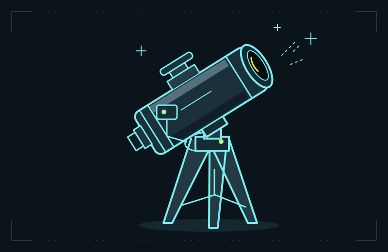

Robo Telescope
Previously pointed to entered sky coordinates using motors. Currently broken and waiting for repair.
THE PERSONAL WORKSHOP OF HRUSHI
Hey, I’m Hrushi
I build software, tinker with electronics, and turn “what if”
into things I can actually try.

pointing code at the stars a little home lab01 / THE PROJECT SHELF
From a few lines of Python
to things with wires and motors.
7 projects · 5 public repositories + 2 personal builds
Try another search or take a look at everything.
02 / OPEN TABS, LOOSE WIRES
A project doesn’t have to be perfect to be worth sharing. Here’s where the unfinished bits stand.
Previously pointed to entered sky coordinates using motors. Currently broken and waiting for repair.
PCB, case CAD, and firmware source are prepared. Physical assembly, component fit, and testing are still pending.
A custom desktop taking shape in code. Real hardware validation remains part of the work ahead.
03 / THE PERSON BEHIND THE PROJECTS
Sometimes that means building a useful web app. Sometimes it means designing a tiny keyboard, running a home lab, or convincing a telescope to move. This is my corner of the internet for all of it.
Find me on GitHubBest learned by making something.
MORE IDEAS THAN SPARE DESK SPACE.